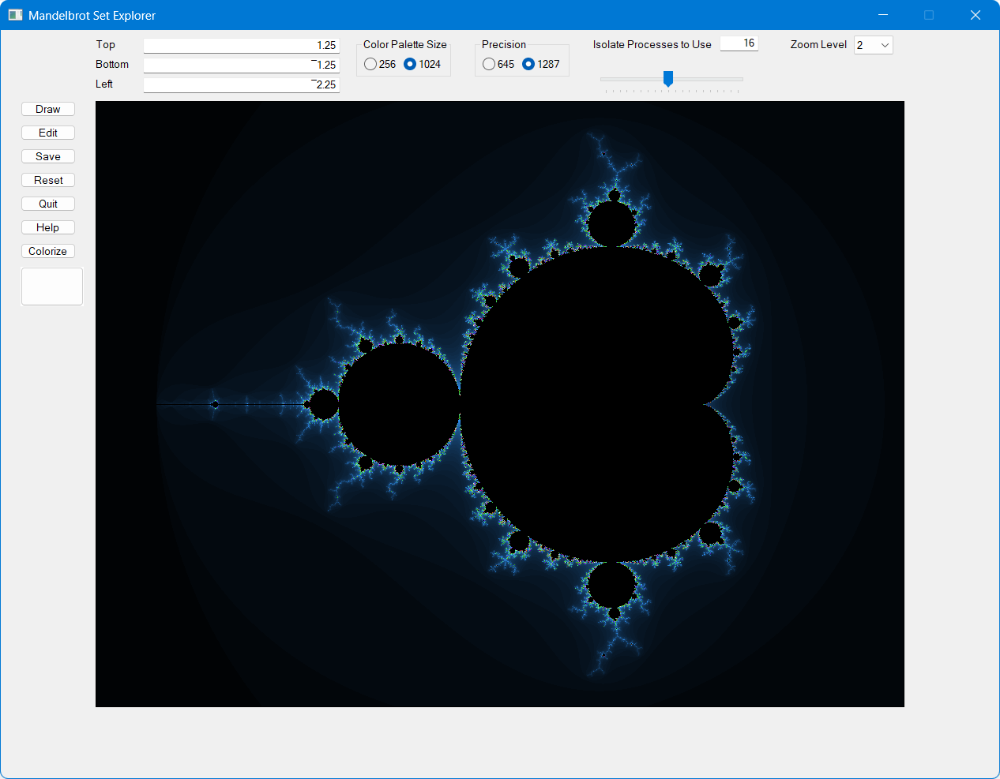
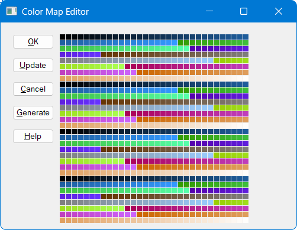

Mandelbrot
| Repository | https://github.com/BPBecker/Mandelbrot |
| Copyright | Made with Material for MkDocs Copyright © 2026 Brian P Becker |
Mandelbrot Set Explorer
This is a project that began in 2006 when I wanted to learn the Dyalog APL's GUI framework. For more information on its evolution see history.
Quick Start
You'll need Dyalog APL for Windows 64-bit preferably the Unicode version, but Classic will work as well. Dyalog APL is free for non-commercial use - see Download Zone.
- Do one or more of the following:
- Clone the https://github.com/bpbecker/mandelbrot repository
- Download and unzip the latest release
- Download and unzip mandelbrot.zip from the assets of the latest release
- Start Dyalog APL for Windows, preferably a 64-bit Unicode version
- Import the explorer, depending on which option you chose above, the explorer code will be in the
/sourcefolder of the repository, or in the folder you unzipped mandelbrot.zip into ]import # {folder}- Start the explorer by entering
Run
Alternatively, you can start the explorer from the command line by running:
dyalog LOAD={folder}

Exploring the Mandelbrot set
The explorer has a fixed 4:3 aspect ratio. You can zoom in and explore the set in any of three ways:
- Click and hold your left mouse button and drag the mouse. This will draw a rectangle of the area to zoom in on. Release the mouse button and the new image will be drawn.
- Right-click to zoom with the center of the new image is where the mouse icon points. The zoom level is controlled by the Zoom Level field in the upper-right corner of the screen.
- Enter Top, Bottom, and Left values in their respective fields and then click the Draw button.
Reference
Input Fields
Input fields control settings for how images are created and displayed.
Top, Bottom, Left
These three fields allow you to define the area of the Mandelbrot set to display. After updating these fields, press the Draw button to update the image. The right edge is calculated based on a 3:4 (height:width) ratio.
Color Palette Size
The palette size determines the maximum number of iterations used to determine if a point is in the Mandelbrot set. It also defines the length of cmap, the color map, where element n is the color to assign to points which escape the Mandelbrot set at iteration n.
A palette size of 256 will run faster that 1024, but will have fewer possible colors.
Precision
Precision is the ⎕FR setting to use when calculating whether a point is in the Mandelbrot set. 1287 is much higher precision than 645 and allows for deeper zooming albeit at lower performance.
Isolate Processes to Use
The explorer can use isolates to distribute the computation load across multiple Dyalog APL processes. A setting of 0 means that isolates will not be used and all computation will be done in the current process. The initial value is set to 2 times the number of processors on your machine - this will help minimize any wait time for a processor.
Zoom Level
Zoom Level is the factor by which the set will be zoomed in when you right-click the mouse on a point in the image.
Slider Bar
The slider bar controls the delay between updates when the Colorize button is clicked. The delay ranges from 2 seconds to 0.1 seconds.
Buttons
Draw
The Draw button will redraw, but not recompute, the current image. This is useful when manually manipulating the color map cmap. See Color Map.
Edit
Opens the Color Map Editor.
Save
Allows you to have the current image as a .png file.
Reset
Resets the image to the original set and color map.
Quit
Quits (duh!)
Help
Opens the Mandelbrot Explorer documentation.
Colorize
Starts (and stops) a loop which iterates at the speed set by the Slider Bar. Each iteration generates a new random color map and updates the image. Clicking the Colorize button a second time stops the loop.
Color Map
The Color Map
The Mandelbrot set is defined by the formula \(z = z^2 + c\), where \(c\) is a point on the complex plane and \(z\) starts at \(0\). The formula is iterated upon up to ≢cmap times. The iteration at the point there the magnitude of \(z\) (\(|z|\)) exceeds \(2\) is the index in cmap which contains the color for that point. A point whose magnitude does not exceed 2 by ≢cmap iterations is considered to be in the Mandelbrot set.
The color map is stored in the global variable cmap. Internally cmap is a vector where the Nth element in contains the palette color (256⊥Red Green Blue) for points that escape the Mandelbrot set after N iterations. cmap is initialized by make_cmapbase.
Manipulating the Color Map
There are three ways to manipulate the color map. Any changes to cmap are temporary - clicking Reset or starting a new explorer will use the default cmap.
Color Map Editor
The color map editor (shown below) is invoked when you click the Edit button. To update a color, double-click on a square in the color grid. This will bring up a color picker that you can use to select a new color.
OK saves the updated cmap.
Update Clicking this previews the changes made to cmap.
Cancel Cancels any changes to cmap.
Generate If you modify 2 colors in the grid and click Generate, a smooth gradient between those colors will be generated.
Help Displays help for the Color Map Editor

Click the Update button to preview the effect of your changes - they will not be saved until you click the OK button.Ctrl-Click
If you hold down the Ctrl key and click either mouse button, the color picker becomes active and you can use it to modify the color all points that escape the Mandelbrot set
From the APL Session
You can manipulate cmap in the APL session. You can either work with it in its vector form, which is a tad inconvenient, or you can create a palette × 3 (or 3 × palette) matrix with each column (or row) representing values in the range 0-255 for red, green, and blue respectively.
After manipulating cmap you can click the Draw button, or run the draw function from the session to update the image. If you used the matrix form of cmap, redrawing the image will convert cmap back into vector form.
cmap ← 0 0 255⌈⍤0 1⊢256 256 256⊤cmap ⍝ make it more blue
draw
My interest in the Mandelbrot set dates back to the August 1985 issue of Scientific American. Around that time, my friend and fellow ex-STSCer, Bob Smith, had written a Mandelbrot set explorer in 386 assembly language. It was exceptionally cool.
Fast forward 20ish years to 2006 when I wanted to learn the GUI features of Dyalog APL for Windows. I find it easier to learn when I have a tangible project and so I decided to write a Mandelbrot set explorer in Dyalog APL.
As Dyalog introduced new language features and tools, I'd update the explorer to incorporate them.
- In 2011, Dyalog v13.0 introduced support for complex numbers and 128-bit decimal floating point numbers. While complex numbers might seem a natural fit for the Mandelbrot with each number representing a point in the X-Y plane, they proved to be a bit slow and cumbersome to manipulate. I found it better to maintain 2 vectors representing the X and Y coordinates respectively. However, 128-bit decimal floating point numbers, while a bit slower than 64-bit floats, provided the ability to "zoom" deeper into the set without losing precision.
- In 2014, Dyalog v14.0 released "isolates" which provided some parallel computation capability. By using isolates, I could distribute the computation of the set across multiple APL processes. I described my work in this blog post.
Over the years, I'd occasionally dust off the explorer and add a new feature like right-click to zoom and various ways to manipulate the color map. I'd also tweak the look and feel to neaten things up a bit.
While I don't plan on publishing formal "releases" (at least not yet), this page will serve to annotate future updates.
MIT License
Copyright (c) 2026 Brian Becker
Permission is hereby granted, free of charge, to any person obtaining a copy of this software and associated documentation files (the "Software"), to deal in the Software without restriction, including without limitation the rights to use, copy, modify, merge, publish, distribute, sublicense, and/or sell copies of the Software, and to permit persons to whom the Software is furnished to do so, subject to the following conditions:
The above copyright notice and this permission notice shall be included in all copies or substantial portions of the Software.
THE SOFTWARE IS PROVIDED "AS IS", WITHOUT WARRANTY OF ANY KIND, EXPRESS OR IMPLIED, INCLUDING BUT NOT LIMITED TO THE WARRANTIES OF MERCHANTABILITY, FITNESS FOR A PARTICULAR PURPOSE AND NONINFRINGEMENT. IN NO EVENT SHALL THE AUTHORS OR COPYRIGHT HOLDERS BE LIABLE FOR ANY CLAIM, DAMAGES OR OTHER LIABILITY, WHETHER IN AN ACTION OF CONTRACT, TORT OR OTHERWISE, ARISING FROM, OUT OF OR IN CONNECTION WITH THE SOFTWARE OR THE USE OR OTHER DEALINGS IN THE SOFTWARE.